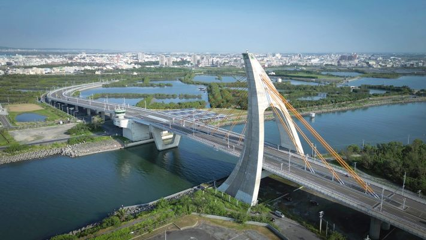
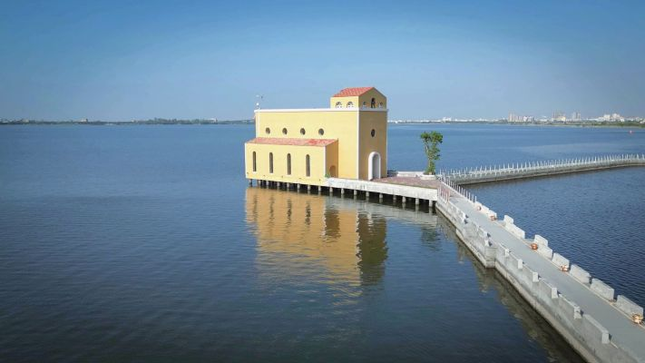
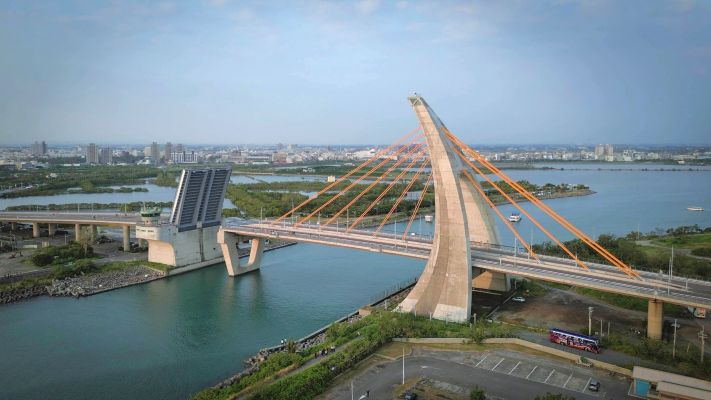
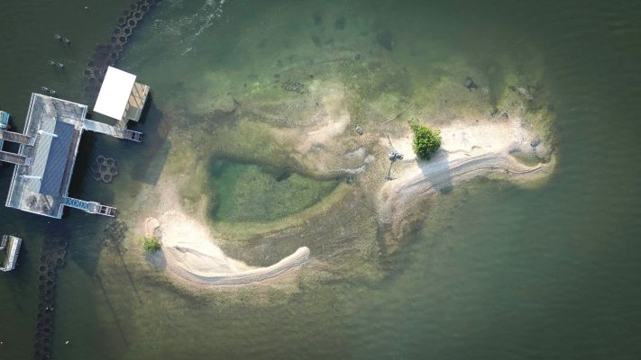
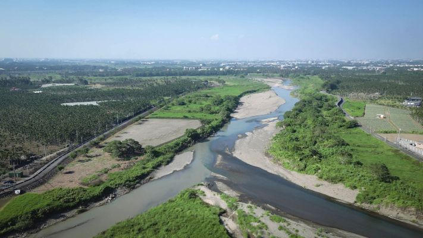
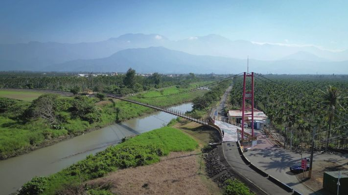
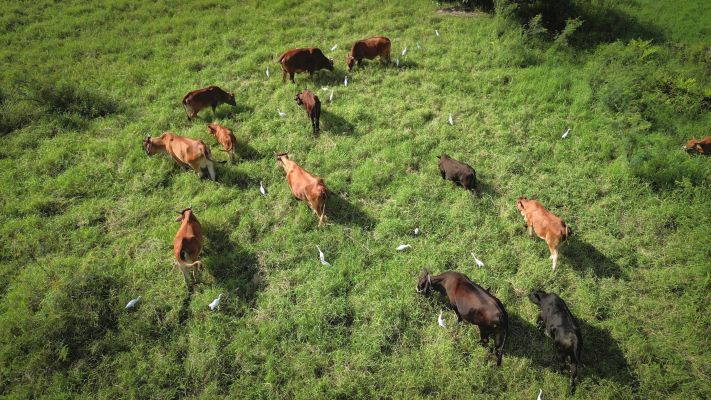
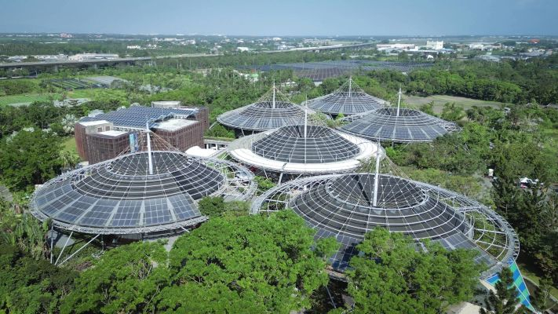
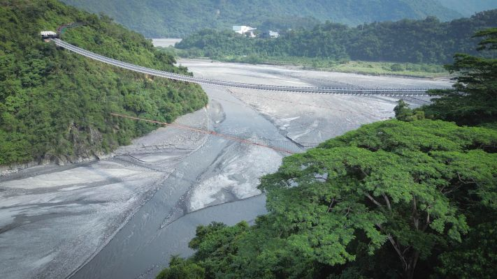
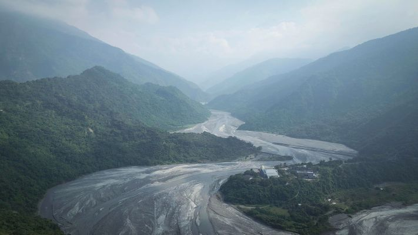

01 鵬灣跨海大橋
全長 579 公尺，橋面寬 30 公尺，於 2011 年 3 月正式通車啟用。本座跨海大橋為特殊三向度設計的斜張橋，橋身側看如揚帆啟航，背面如英文字母 A，最大的特色是全台首座可開啟式橋樑。

COURSE PROJECT / 影像成果
COURSE
指導老師：蔡嘉陽老師
FLIGHT LOG / 10 PLACES

全長 579 公尺，橋面寬 30 公尺，於 2011 年 3 月正式通車啟用。本座跨海大橋為特殊三向度設計的斜張橋，橋身側看如揚帆啟航，背面如英文字母 A，最大的特色是全台首座可開啟式橋樑。

全台第一座「海上教堂」佇立在大鵬灣灣域內。走過 300 公尺長的海堤，鵝黃色建築外觀與西班牙式設計帶來浪漫氛圍。雖然外觀如同教堂，其實是一間景觀咖啡廳。

大鵬灣屬於單口囊狀潟湖，跨海大橋下是潟湖唯一的進出海口。全台首座可開啟式橋梁可單向開啟 75 度仰角、跨距達 20 公尺，開橋秀成為來到大鵬灣不容錯過的特色。

「蚵殼島」是從前大鵬灣蚵民不經意的傑作。大家相約成俗，集中將蚵殼傾倒此處，數十年後形成面積約 7150 平方公尺、像是漂浮在水面上的島嶼。

東港溪之名來自屏東縣東港鎮，東港之意原為「位於下淡水溪的東邊」。過去東港溪河口是相當繁榮的貿易地與物資交換地點。

全長約 168 公尺、寬 2 公尺，橋面結合 3D 立體彩繪。吊橋規劃為自行車道，只開放徒步及單車通行，遼闊視野能遠眺北大武山，也是東港溪賞鳥的地點。

東港溪畔旁的河堤不僅是附近居民午後散步、騎單車的好去處，沿岸更時常可以看見悠閒放牧的牛群，構成自然純樸的田園風光。

園區佔地約 30 公頃，主要展示臺灣客家文化。園區分成自然草原區、田園地景區、傘架客家聚落區及九香花園伯公區，六座傘架聚落式建築表達客家斗笠與紙傘意象。

全長 262 公尺、距離高度約 45 公尺，向下可俯瞰壯闊山巒美景。橋身以排灣族、魯凱族的琉璃珠為意象，兩邊有原住民百步蛇圖騰。

隘寮溪屬於高屏溪水系，為高屏溪的最大支流，也被稱為魯凱族群與排灣族群文明的母親之河。